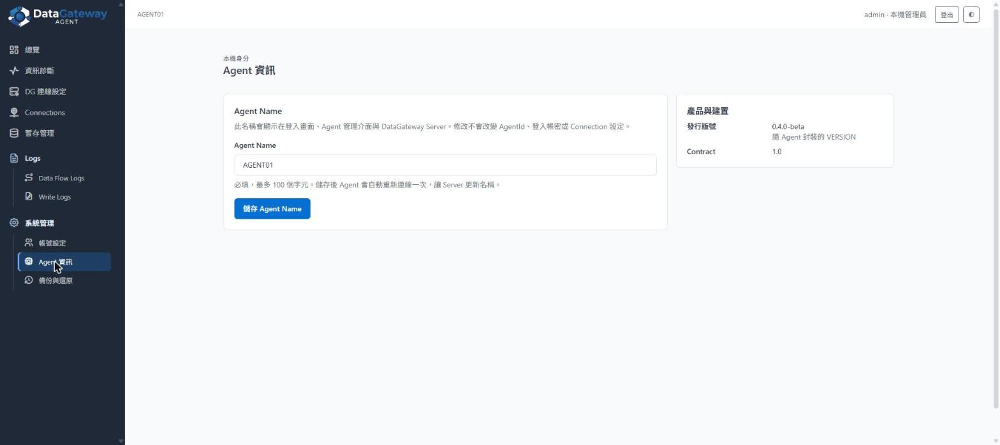

Agent 資訊
設定 Agent 的顯示名稱，並查看 Agent 的版本資訊。
修改 Agent 名稱

- 在「Agent Name」輸入名稱（必填，最多 100 個字元）。
- 按「儲存 Agent Name」。
Agent 自動重新連線一次，DG 的 Agent Registry 與 Tag 名稱來源顯示新名稱。
修改名稱不會改變 AgentId、登入帳密或連線設定。
失敗時先查
- DG 沒有更新名稱：確認 Agent 重新連線後為 Online。
查看版本資訊
- 看「發行版號」（隨 Agent 封裝的 VERSION）與「Contract」（與 DG 的通訊契約版本）。
可確認 Agent 版本與 DG 相容（Contract 與 DG 總覽的 CONTRACT 相同）。
失敗時先查
- Contract 不同：請升級 Agent 或 DG 到相容版本。